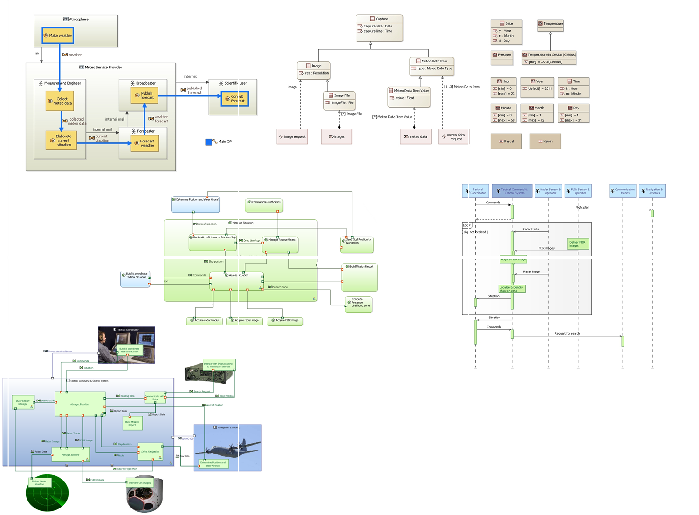
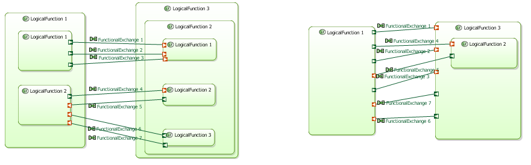

Some key features among the wide list of features of Capella
Overview
Overview provides a methodological access to all key activities of Capella. It is displayed automatically each time a Capella model is opened. It can also be launched with the contextual menu.

Semantic color map
Graphical representation of elements play a key role in communication. Capella relies on a consistent color scheme thus easing communication and models readability between different stakeholders.

Diagrams
Capella provides several types of representations including modes and states diagrams, sequence diagrams, architecture diagrams, class diagrams, allocation matrices, etc.
Semantic Browser
The Semantic Browser provides the context of model elements. It is the preferred way to navigate in models and diagrams and to quickly analyze the relationships between model elements.

Computed Links
Capella provides means to tackle models complexity.
Considering nested components and links between them, for readability purposes, the model can be simplified
showing only top-level components. Additionnal resulting links between top-level components are computed from
low-level components interactions and this, automatically.

Advanced Diagram Management
- Automated contextual diagrams
- Unsynchronized diagrams
- Filters
- Layers
Model Validation
- Validation profiles, a mean to specify validation rule sets, thus enabling configuration reuse during validation of Capella model elements.
- Batch quickfixes, providing quick solutions to validation issues.

Semantic delete with preview
Shows impacts on architecture on element deletion operation from the model.

Replicable elements and libraries
Replicable Elements are mechanisms allowing the easy reuse of model parts. A Replicable Elements Collection (REC) is a definition of an element / set of elements which can be used in multiple contexts / configurations / models. A Replica (RPL) is a use (instantiation) of a Replicable Elements Collection in a given context / configuration / model. RECs can be packaged in libraries which can be shared between several projects.

Modelling Patterns
A pattern is a general solution to a recurring engineering problem. Patterns are a very valuable part of the knowledge of domain experts, where the domain can be Software, Hardware, System design, or a specialty engineering discipline such as Safety, Security, Performance, etc. When engineering relies on modeling, a pattern naturally manifests itself as a recurring modeling principle - or modeling pattern.
Transition System Subsystem
The objective of this transition is to re-apply the methodology starting from one or several given Configuration Item(s) or to extract a subset of the Physical or Logical Architecture and populate a new model with this subset.

Multi-Viewpoint
From extraction of separated metadata introduced on elements using Viewpoints to correlation thereof. Allows business information computation like architecture evaluation.